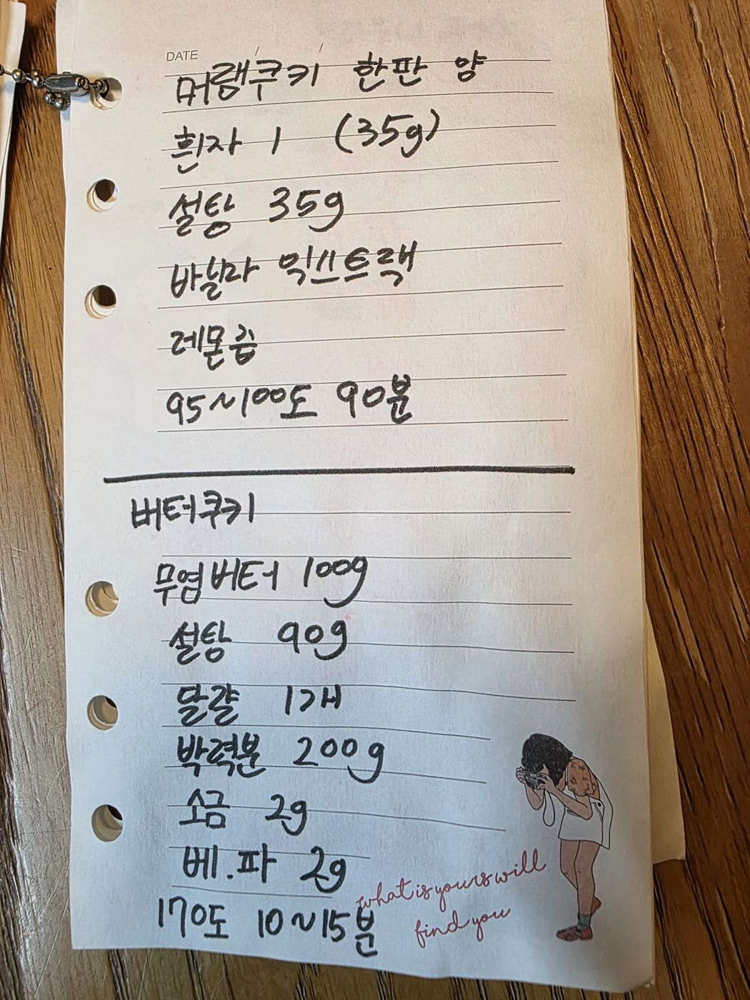

← 전체 레시피
쿠키
🍥 머랭쿠키 & 버터쿠키
손으로 적은 노트를 그대로 옮긴 레시피입니다.
분량
각 한 판
굽기
머랭 95~100℃ 90분 / 버터쿠키 170℃ 10~15분
📷 원본 노트 사진 보기
재료
머랭쿠키 (한 판 분량)
흰자 1개 (35g)
설탕 35g
바닐라익스트랙
레몬즙
버터쿠키
무염버터 100g
설탕 90g
달걀 1개
박력분 200g
소금 2g
베이킹파우더 2g
만드는 법
머랭: 흰자에 설탕을 나눠 넣으며 단단한 머랭을 올리고 바닐라·레몬즙을 넣는다.
머랭: 95~100℃에서 90분 건조하듯 굽는다.
버터쿠키: 버터를 풀고 설탕 → 달걀 순으로 섞는다.
버터쿠키: 박력분·소금·베이킹파우더를 체 쳐 섞어 반죽한다.
버터쿠키: 170℃에서 10~15분 굽는다.

원본 노트 사진 — 탭하면 크게 볼 수 있어요